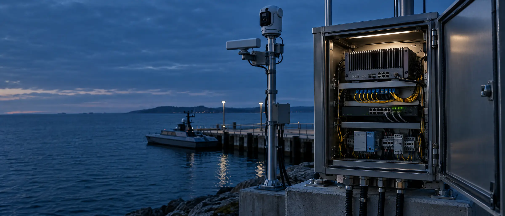
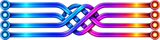

Software.
Meet the physical world.
Bifrost is Asgard's reusable software architecture for complex physical systems. It is designed to connect hardware, edge software, events, state, evidence, intelligence, operational interfaces, and the applications built on them.
In development
One core architecture. Many systems.
Connect devices, preserve context, and build operational applications on a foundation designed to evolve with the system: from signal to action.
A shared core. From signal to action.
Nine architectural responsibilities, from the hardware boundary to the product boundary. Select one to see what it takes in and what it produces.
The world the software serves.
Devices, sensors, machines, and platforms produce observations and receive authorized commands. Their physical constraints define the operating context.
- Input
- Physical measurements
- Output
- Device-native signals
Different vendors. A common language.
Adapters isolate device protocols and vendor-specific behavior. Native signals become explicit contracts so hardware can evolve without dictating the application.
- Input
- Device-native signals
- Output
- Normalized observations
Compute where systems operate.
Local software supports processing and operational logic near the hardware. Connectivity, buffering, and recovery requirements are defined for the deployment.
- Input
- Normalized observations
- Output
- Local events + processing
Make meaning explicit.
Defined contracts give events consistent meaning across components. Producers and consumers can evolve around stable interfaces, with changes made deliberately.
- Input
- Local events
- Output
- Contract-defined events
Know what is known. And why.
State is connected to the observations and transformations that produced it. Source, timing, and lineage preserve context as information moves through the system.
- Input
- Events + transformations
- Output
- State with lineage
Keep the record reconstructable.
Evidence and retained events support inspection and reconstruction. Storage, retention, and access requirements are designed around each program.
- Input
- State + source evidence
- Output
- Retrievable records
Add context with accountability.
Models may enrich observations with detection, classification, or reasoning. Output retains confidence and lineage; it does not silently become operational authority.
- Input
- Observations + evidence
- Output
- Attributed model context
A deliberate operational interface.
Applications access system capabilities through defined interfaces. Read access, actions, authorization, and operational boundaries are made explicit for each product.
- Input
- State + context
- Output
- Operational interfaces
Different products. Shared foundations.
Operator experiences and custom products are built on the same architecture. Each application is shaped around its mission while sharing the contracts, state, evidence, and operational interfaces beneath it.
- Input
- Operational interfaces
- Output
- Purpose-built experiences
Intended architecture in development · the architecture supports multiple information and command paths
Change the hardware. Keep the contract.
Device-specific adapters translate native signals into a common interface. The application stays focused on the mission.
- Device + adapterCamera · radar · custom machineFrame metadata · range + bearing · machine telemetry
- Shared contract

BifrostObservation + source + time - ApplicationOperational experienceSame architectural interface
Illustrative integration pattern · each adapter requires engineering and validation
Intelligence belongs where things happen.
From local compute to wider operations, Bifrost is designed around the conditions of the system: its hardware, its connectivity, and its operating boundaries.
- Hardware
- Edge
- Operations
Built for change. Grounded in trust.
Explicit interfaces. Traceable information. Deliberate authority. These principles shape the architecture from the device boundary to the operator experience.
Hardware-agnostic
Vendor hardware integrates into the system without becoming the system. Adapters contain device-specific behavior behind defined interfaces.
Edge-first
Compute and operational logic can live where physical systems operate. Connectivity and recovery are architectural requirements.
Provenance-native
Information carries source, time, and transformation context, making its lineage available to the systems that use it.
Modular by design
Sensors, models, transports, and applications can evolve independently through explicit contracts.
Deterministic where it matters
AI can inform a system while rules and authority boundaries govern operational action.
Auditable
State, events, evidence, and operator actions are designed to support reconstruction and review.
Application-independent
The backbone supports different products and organizations without tying the core architecture to one interface.
Context you can trace. Decisions you can inspect.
Intelligence adds to the record. Source, timing, and model context remain connected, while operational authority stays explicit.
Physical systems deserve a lasting software foundation.
Asgard is building Bifrost so the next system can start with shared architecture and put more engineering into the mission.
Interfaces between Bifrost, Launchbelt, and Forge are being defined · Bifrost is in development · visuals depict conceptual systems

What will you connect?
Tell us about your system and the world it operates in.
Forging Brilliance, Destined by Design.